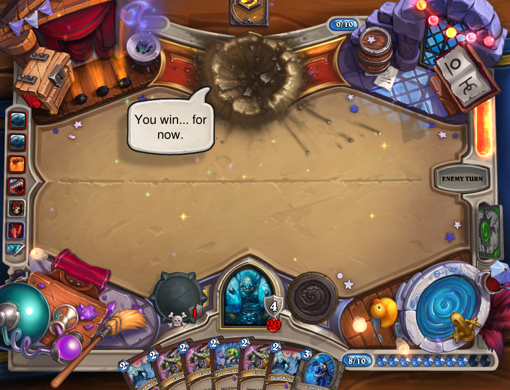

Dead Man's Hand Warrior
In card games, I’ve always found fatigue or mill-styled decks to be the one of the most technically interesting play styles to use. Hearthstone has had several control styled archetypes in the past in both the Priest and Warrior classes where the games reached fatigue as well as a few variations of a Mill Rogue deck but all of these suffered from not having interesting micro and macro decisions for the player.
Most Hearthstone decks have the problem of having very little interesting macro decisions to make in regards to specific match-ups. Besides the initial mulligan, nearly all decks will make micro turn-based decisions but rarely is there a need to plan out any turn other than your next 1 or 2 plays. However, even in decks where you play towards a late-game goal, this strategy rarely changes on a game by game basis.
This is why Dead Man’s Hand Warrior otherwise known as Mill Warrior has become my favorite deck in any card game. My version is a slight variation on Dog’s September remake of his initial deck but I’ve opted to substitute in a Ravaging Ghoul in place of the second Blood Razor and a Mountain Giant in place of a Dirty Rat to deal with the mirror match-up. This deck has a simple goal of focusing heavily on aggressively drawing cards through Acolyte of Pain, Battle Rage, and other card draw utilities. While in the end game, it uses the namesake Dead Man’s Hand to reshuffle another copy of Dead Man’s Hand along with other match-up essential cards back into the deck creating an infinite deck.

The fun part comes in both attempting to reach the fatigue state and crafting a hand in the meantime that can counter whatever is currently in the opponent’s deck. In the above example, I’ve opted to include a Mountain Giant, Bring It On, Shield Block, and Coldlight Oracle as my deck in an attempt to counter the mirror match-up. Unfortunately I have 2 copies of Sleep with the Fishes which I’ll need to quickly get rid of otherwise my deck will be filled with useless cards. Even the cards I initially include in my “dead man’s hand” will be culled as well overtime, After a certain armor amount the Bring it On copies will become useless cards and I’ll have to get rid of them as well. The timing of when to use cards and deciding which cards are useful or useless is the crux of the deck.
In the deck you have a heavy amount of minion clearing spells but due to having very little minions, you have to ration out your spells to be able to stop early aggro and remove beefier minions late game. In some matchups and depending on card draws you can opt to Dead Man’s Hand early game to allow for more liberal uses of clear and armor gain to survive. Once the game reaches the fatigue stages your victory is usually assured granted you’ve culled your deck enough. While cards like Brawl and Execute are great in the mid game, if these last until fatigue it will spell your defeat. This makes it so the decision of if you should use a card needs to be considered in both the current turn and turns 10+ in the future which has been absent from the decks in Hearthstone up until now.